| 1981 |
IBM PC est le premier ordinateur personnel conçu par l'homme. C'est donc l'ancêtre de tous les ordinateurs actuels. |
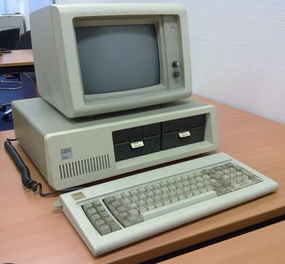 |
| 1982 |
Le Minitel est le tout 1er « terminal informatique » domestique connecté. Il permet d'accéder à des services en ligne et de faire de la vente par correspondance. Le Minitel est considéré comme l’ancêtre d’internet. |
 |
| 1991 |
Linux est le 1er système d’exploitation « open-source », il peut être utilisé sans restrictions. Microsof et Windows seront lancés après Linux, mais actuellement c'est le système d'exploitation le plus utilisé sur les téléphones. |
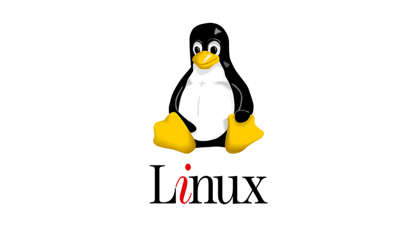 |
| 1992 |
Le téléphone Bi-Bop est commercialisé en 1992. C'est le 1er téléphone à offrir aux utilisateurs une offre de téléphonie mobile. Avec celui-ci, on peut recevoir des appels ou appeler lorsqu'on se trouve près d’une borne et qu’on y est connectée. A l'époque le Bip-Bop était appelé « cabine téléphonique portable ». Le Bip-Bop, à son apogée en 1997, comptait plus de 50 000 utilisateurs. |
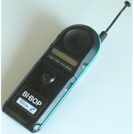 |
| 1994 |
Apparition de la playstation qui est une console de jeux grand public. La playstation connait très vite un succès mondial avec 100 millions de consoles commercialisées dans le monde. |
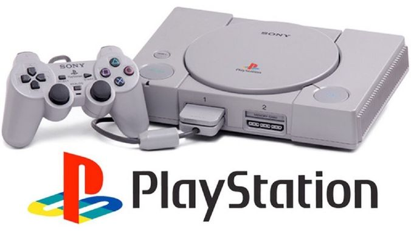 |
| 1995 |
- Invention de Yahoo, c'est le 1er moteur de recherche en ligne : à l’origine yahoo était un annuaire web puis est devenu le 1er moteur de recherche sur internet, de nos jours il est dépassé par google mais il reste quand même un des plus utilisé dans le monde entier
- Naissance de Microsft windows 95 : système d’exploitation le plus populaire jamais conçu, 100 millions de copies en ont été vendu, il introduit le bouton démarre et la notion de barre des taches
|
|
| 1997 |
Révolution Google : 1er moteur de recherche analysant les relations entre les sites web pour offrir des meilleurs résultats que ses concurents. A son lancement, il recevait 10 000 requètes par jour mais actuellment, en quasi situation de monopole il enregistre 150 000 requètes par secondes ! |
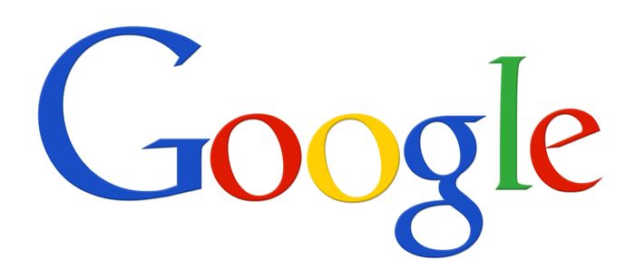 |
| 1999 |
- Téléphone mobile 1ère génération : ancêtre des smartphones, il dépasse en France les 100% d’équipement de la populations car dans de nombreuse situations le téléphone personnel et professionnel se cumule (démocratisation du mobile)
- Invention de la wifi : 1er dispositif sans fil à pouvoir connecter deux appareils informatiques (ordinateurs, décodeurs internet, routeurs) au sein d’un réseau mais surtout à internet. Aaujourd’hui il est généralisé et gratuit dans les espaces publics.
|
 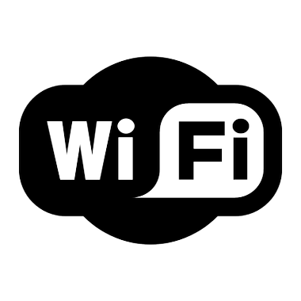 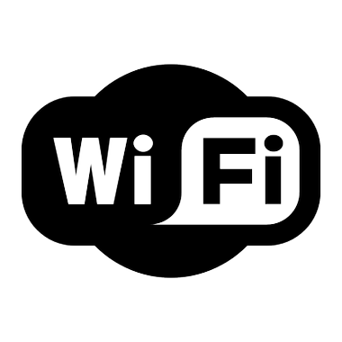 |
| 2001 |
Wikipédia : 1ere encyclopédie contributive en ligne, projet universel. Les internautes peuvent modifier ou y ajouter des contenus, l'encyclopédie contributive est traduite en 287 langues et visitée plus de 600 milions de fois chaque mois. |
|
| 2005 |
- Youtube : 1er site web de partage de vidéos. Les utiklisateurs peuvent regarder, envoyer et partager des vidéos. (En 2013, il y avait 4 milliards de vidéos vues chaque jour).
- Android apparait après Linux : c'est un système d’exploitation mobile « open-source » : il utilise de noyau de Linux mais c’est un système d’exploitation mobile « open-source » pour ordinateurs, téléphones, tablettes et autres terminaux mobiles. Il est libre et personnalisable contrairement au système d’exploitation de l’Iphone
|
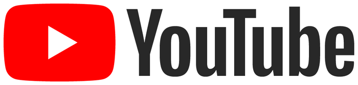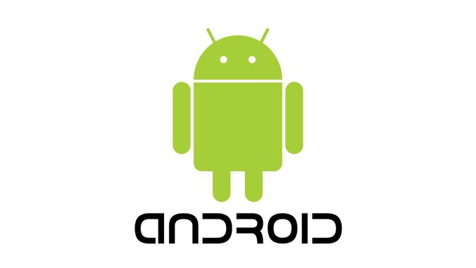 |
| 2006 |
- Facebook a d’abord été juste pour les américains puis il a été ouvert au monde entier. Il a vite été adoptée, puisqu' aujourd’hui c’est le réseaux social le plus important sur internet. (en 2013 : Facebook avait plus de 1 milliard d’utilisateurs actifs)
- Twitter : outil de microbloguage qui permet la diffusion gartuite de brefs messages appeler « twitts ». Ce service devient vite populaire et fin 2013, Twitter compte 600 millions d’utilisateurs.
|
|
| 2007 |
Le 1er Iphone est commercialisé par apple. C'est le 1er succès mondial sur le marché des smartphones. Un Iphone est la convergence d’un téléphone portable au multiples fonctionnalités, d’un ipod et d’un client internet. Plus de 150 millions d’exemplaires vendus dans le monde. L'Iphone a lancé l’air de smartphones |
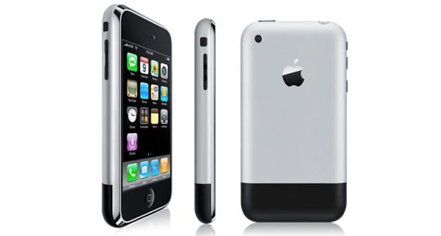 |
| 2008 |
Déploiement de l’App store : 1er magasin d’application en ligne : plateforme de téléchargement d’application distribuée par apple sur les appareils mobiles. Il fonctionne sous un IOS précis pour répondre a différentes fonctions solicitées par l’ulitsateurs. (En 2014 ,durant le 1er trimestre: le chiffre d’affaire de l’App store est de 4,4 milliard de dollard et il compte plus de 10 milliards de téléchargements). |
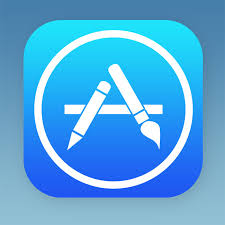 |
| 2009 |
Foursquare : 1er réseau sociale géolocalisant, permettant de localiser un utilisateur ou de savoir où il se trouve, de recommander des lieux de sortis (fin 2013 : Foursquare comptait 37 millions d’utilisateurs). Ses fonctions ont été intégréess par Facebook en 2011. |
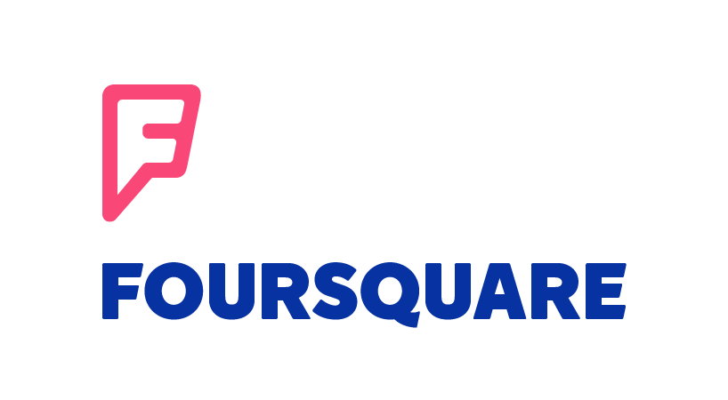 |
| 2010 |
Instagram : application de partage de photo. Instagram porpose aux utilisateurs une possibilité de rajouter des filtres qualitatifs sur leurs photos ainsi que de liker et de commenter les photos de leur amis\autres utilisateurs, mais en 2012 celui-vi est racheté par Facebook. |
|
| 2012 |
Google Play imite l’App store. C'est une boutique en ligne créée par Google. Il regroupe des applications pour le système android (fin 2013 : il compte plus de 850 mille applications). |
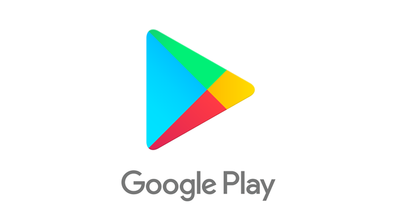 |
| 2014 |
ProjetGoogle glass : programme de recherche et de développement lancé par Google sur la création d’une paire de lunette avec une réalité augmentée. |
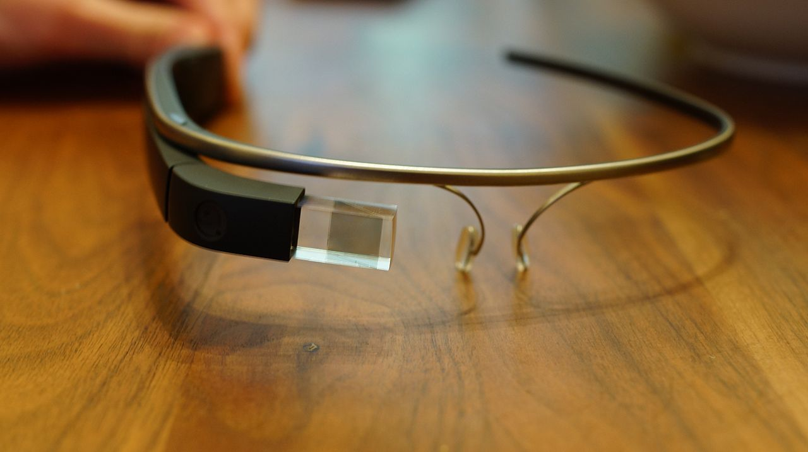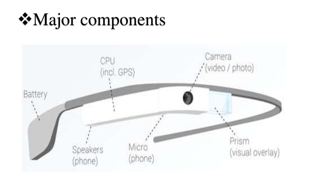 |